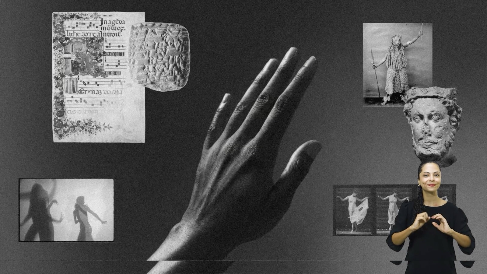
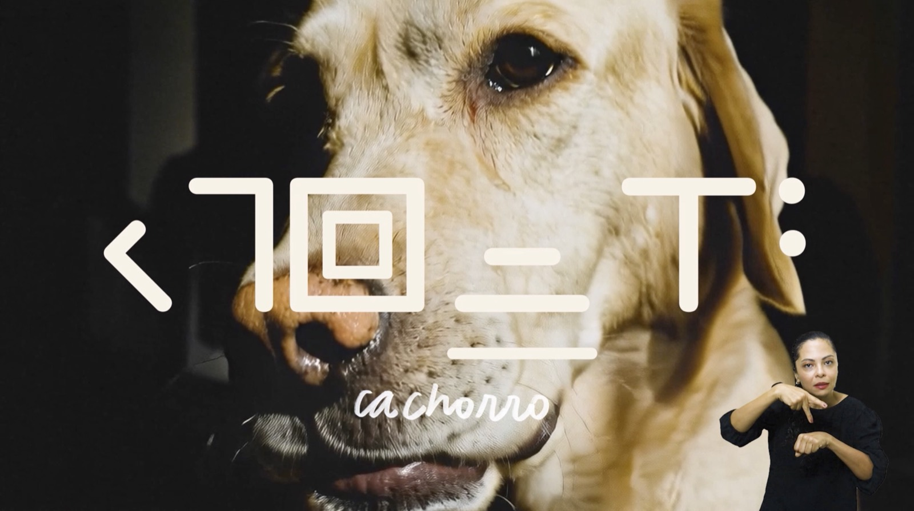

CÓMO NACIERON LA ESCRITURA Y LA FUENTE
La historia de ELiS
La lingüista Mariângela Estelita Barros creó ELiS en 1998 para escribir las lenguas de señas. Esta es la historia de esa escritura, del cuaderno al teclado.
- tgdedos
- çpalma
- Qpunto: rostro
- Ämovimiento
tgçQÄ. Ejemplo de Barros (2016).En 1990, una estudiante de tercer año de Letras en Goiânia, en el centro de Brasil, notó un movimiento en el auditorio de su facultad y fue a ver qué pasaba. En el escenario, un profesor sordo señaba mientras dos colegas oyentes se turnaban para traducir. Pero fue el público lo que la atrapó. Había muchas personas sordas sentadas que conversaban animadamente “sin sonido, con las manos”, como pensó entonces. A la semana siguiente, Mariângela Estelita Barros se inscribió en el primer curso de Libras del estado de Goiás, impartido por Edson Franco Gomes, sordo y pionero de la enseñanza de Libras.
Ya hablaba cinco idiomas. La Libras, la lengua de señas brasileña, la dejó desarmada. “Miraba y no veía”, escribe. No sabía qué cambiaba el significado y qué no.
Esa pregunta guiaría los 35 años siguientes. ¿Por qué la Libras, la lengua de la comunidad sorda brasileña, no tenía una forma escrita que la gente usara de verdad?

¿Qué significa hablar una lengua que no se puede escribir? Significa aprender a leer en la lengua de otra persona. Ver cómo las historias contadas con las manos desaparecen cuando las manos se detienen. Recibir cada examen escolar y cada formulario del centro de salud en una lengua que no es la tuya.
Esa sigue siendo la realidad de la mayoría de las personas sordas en Brasil. Según el instituto de estadística del país, el IBGE, entre 2,3 y 2,5 millones de brasileños tienen sordera severa o total. La Libras está reconocida por ley desde 2002. Pero los niños que la usan todavía aprenden a leer y escribir en portugués, una lengua hecha de sonidos.
“Viven el mundo de forma visual, y el portugués no es una lengua visual.”
Una escritura hecha a mano
En la maestría decidió describir la lengua: cada configuración de mano, cada movimiento, cada punto del cuerpo donde ocurre una seña. Lo hizo todo en papel. Recién compró su primera computadora al final de la maestría, a tiempo para aprender a escribir su tesis.
De aquellos cuadernos salió una idea. Si toda seña está hecha de un conjunto limitado de partes, esas partes podían escribirse una tras otra, como letras. En 1998 presentó un sistema que hacía exactamente eso. El primer texto escrito en él fue el himno de la Asociación de Sordos de Goiânia. Hoy el sistema se llama ELiS, Escrita das Línguas de Sinais, “Escritura de las Lenguas de Señas”.
- 96visografemas
- 10configuración de dedos
- 6orientación de la palma
- 35punto de articulación
- 45movimiento
Estelita llama a estos caracteres visografemas. Escritos siempre en ese orden, dedos, palma, punto de articulación y movimiento, forman una seña.
Para desarrollar la escritura, dejó un empleo bien pagado en Goiânia y se mudó a Florianópolis con sus dos hijos, viviendo de una beca, hasta terminar el doctorado en 2008. Al año siguiente entró en la Facultad de Letras de la UFG, donde enseña ELiS hasta hoy.

Una seña a la vez
Para enseñar, necesitaba escribir en la computadora. Una amiga le presentó a William Dimas, Bill, funcionario de la Secretaría de Educación de Goiás. Él aceptó hacer una fuente ELiS gratis, con una condición: que siempre se distribuyera gratis. Ella aceptó en el acto. A principios de 2010 pudo escribir en ELiS por primera vez.
Fue un comienzo, pero el sistema todavía necesitaba mejoras…
Aun así, soñó en grande. Imaginó la Libras y a las personas sordas entrando en el mundo escrito y ocupando su lugar en él: literatura, diccionarios, libros de texto, libros infantiles, traducciones de todo. Después entendió que no podría sola. “La escritura es un bien colectivo, social”, escribe. Y empezó a enseñar.

Libros que nadie quería publicar
Con sus alumnos tradujo doce cuentos de los hermanos Grimm a la Libras escrita. Las editoriales los rechazaron: el público era demasiado pequeño para tener atractivo comercial. Entonces, en 2021, su hija, la diseñadora Marília Barros, abrió una pequeña editorial de impresión bajo demanda, Tutti Editora, dedicada a publicar los libros. Rapunzel, El príncipe rana y varios otros cuentos se pueden leer gratis en línea. Estelita espera que marquen a una generación de niños sordos que crecerán leyendo historias en su primera lengua.
Fue en ese momento cuando la fuente antigua ya no alcanzó. Los libros siguientes eran enormes: un curso de 700 páginas de lengua de señas estadounidense escrito para brasileños y un diccionario Libras/ELiS–portugués que llevó once años terminar. Los programas de maquetación modernos no aceptaban la fuente antigua, y la maquetación del libro de ASL se detuvo. Buscó cuánto costaría una fuente nueva y leyó que podía llegar a cientos de miles de reales.
“Una vez más, me vi con las manos atadas.”
“Soy profesora, no tengo cómo encargar una fuente”
Buscando en internet, encontró a Plau, una fundición tipográfica independiente de Río de Janeiro. Ella y su equipo se pusieron en contacto para explicar lo que necesitaban: una fuente para escribir en Libras.
La reunión se celebró en línea el 5 de julio de 2024. Estelita y Luísa de Castro Freitas, que maquetaba los libros para Tutti Editora, explicaron los problemas que habían encontrado con la fuente antigua. Plau aceptó el desafío en el acto.
Estelita no entendió. Insistió en que no era una empresa, que era profesora y no podría encargar el diseño de una fuente. Fue entonces cuando escuchó que Plau haría el trabajo pro bono.
“Esa ayuda, tan esencial como inesperada, me emocionó mucho.”
Aprender a leer una escritura que no entiendes
Para quien no conoce ELiS, sus caracteres son ininteligibles: un cuadrado, un trazo inclinado o un punto pueden representar un dedo, la palma o un toque en el cuerpo. La diseñadora tipográfica Ana Laura Ferraz, de Plau, trabajando con el fundador Rodrigo Saiani, no podía redibujar un visografema sin saber qué significaba. El trabajo se convirtió en una larga conversación con Estelita.
¿Por qué algunos visografemas de dedo son bajos y otros altos? Porque los bajos son el pulgar, explicó Estelita, y la diferencia tiene que ser nítida; eso se convirtió en la altura de x y la altura de las mayúsculas de la fuente. Un trazo bajo una parte del cuerpo indica que la mano la toca: un trazo para un toque, dos para dos, tres para tres o más. Estelita quería ese trazo más fino que el visografema, “pero no tan fino como es hoy en Word, porque, si la letra es muy pequeña, ni siquiera aparece”. Plau dibujó el subrayado simple como se hace en una fuente cursiva, con versiones distintas para el inicio, el medio y el final de una secuencia, que se cambian automáticamente al escribir.
- '1Qun toque
'1Q - '2Qdos toques
'2Q - '3Qtres o más
'3Q
La primera versión completa le llegó a Estelita a fines de julio de 2024. “¡La primera impresión es que la fuente está mucho más aireada, lo que es muy positivo!”, respondió. “Los visografemas son mucho más distintos entre sí, no dan la impresión de estar amontonados.” En febrero de 2025 la nueva fuente ya funcionaba, y se retomó la maquetación del libro de ASL.
Hacer que la fuente funcionara en todas partes llevó más tiempo. PowerPoint en Windows ignoró las reglas de la fuente durante más de un año. A pocos días del lanzamiento final, después de un intenso intercambio de mensajes con Rainer Erich Scheichelbauer, cofundador del editor de fuentes Glyphs, Rodrigo encontró la solución.

Escrita para la próxima generación
La nueva ELiS tiene cuatro estilos, 404 glifos y una guía en línea gratuita: en este sitio, cualquier persona puede escribir en ELiS en el navegador, encontrar cada tecla y ver en qué parte del cuerpo ocurre cada seña. Las fuentes son gratuitas, bajo la licencia SIL Open Font License, cumpliendo la promesa que Estelita le hizo a Bill hace quince años. Plau también le encargó una película al estudio Noo Works, con interpretación en Libras, para contar la historia. Todo el proyecto fue pro bono.
El próximo paso es más grande que una fuente. ELiS describe el cuerpo, no palabras, por eso puede escribir cualquier lengua de señas; ya se probó en otras veinte, y solo Brasil tiene 35 lenguas de señas indígenas, casi ninguna registrada por escrito. Plau y Estelita preparan una propuesta para incluir ELiS en Unicode, el estándar que permite que todo teléfono y computadora entienda un texto. Hoy, solo una escritura de lenguas de señas, SignWriting, forma parte de él.
“Con una fuente fácil de usar, la gente empieza a ver como algo normal que las lenguas de señas se puedan escribir.”
Créditos
- Sistema de escritura ELiS
- Mariângela Estelita Barros (UFG)
- Primera fuente ELiS (2010)
- William Dimas
- Primer contacto
- Luísa de Castro Freitas (maquetadora, Tutti Editora)
- Proyecto
- Plau
- Diseño tipográfico
- Ana Laura Ferraz y Rodrigo Saiani
- Ingeniería tipográfica
- Rodrigo Saiani
- Diseño
- Carlos Mignot, Gabriela Fiks y Mariana Navarro
- Coordinación y atención
- Aline Caruso
- Gestión de contenido
- Valter Vinícius Costa
- Guía interactiva
- Plau
- Película
- Noo Works, con Libras de Etc Filmes
- Agradecimiento
- Rainer Erich Scheichelbauer (Glyphs)
SIGUE EN LA GUÍA
Prueba la escritura.
La fuente ELiS es gratuita. En la guía puedes escribir en ELiS en el navegador, consultar el mapa de teclas y descargar los archivos.